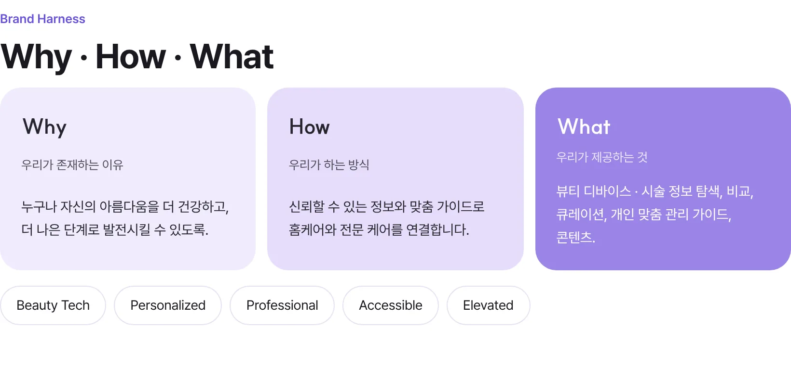
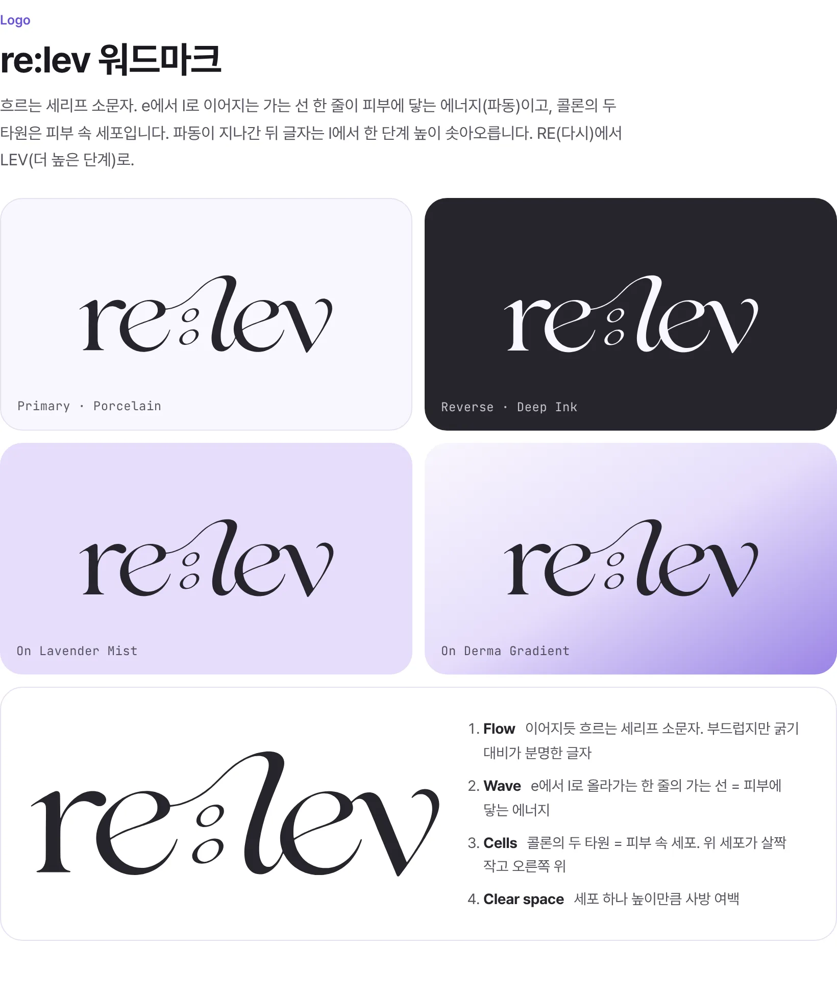
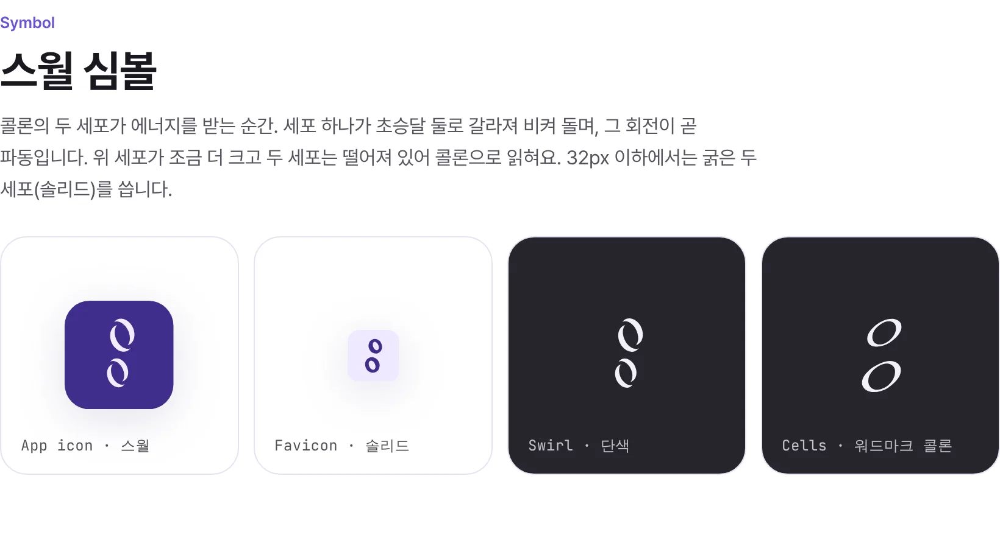
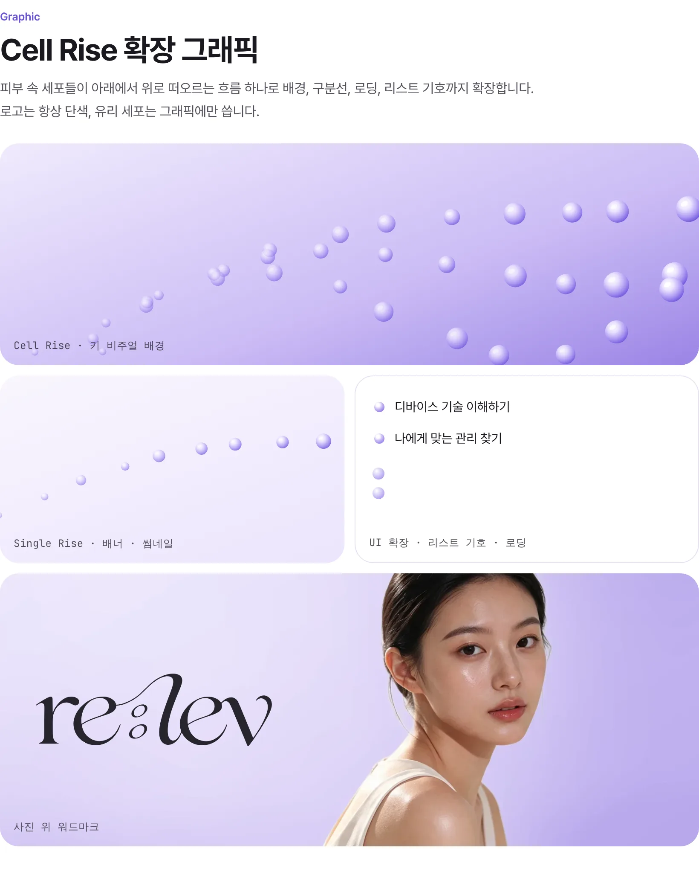
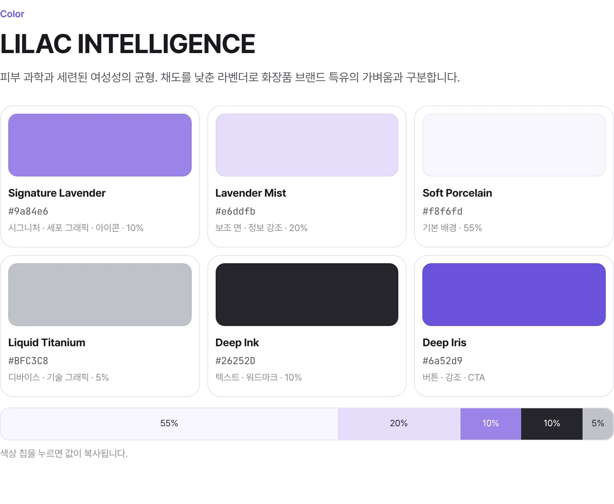
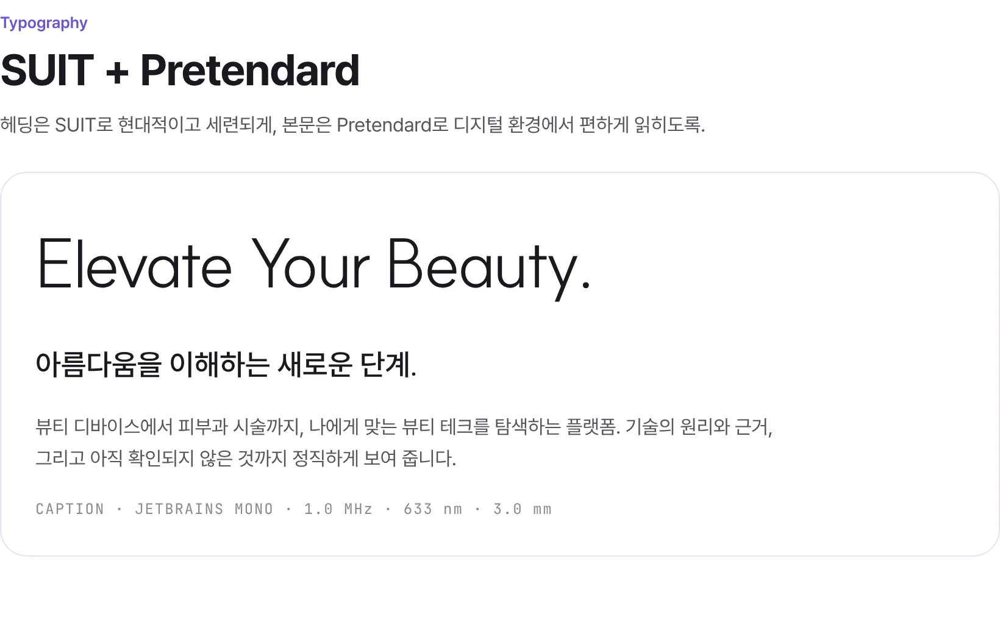
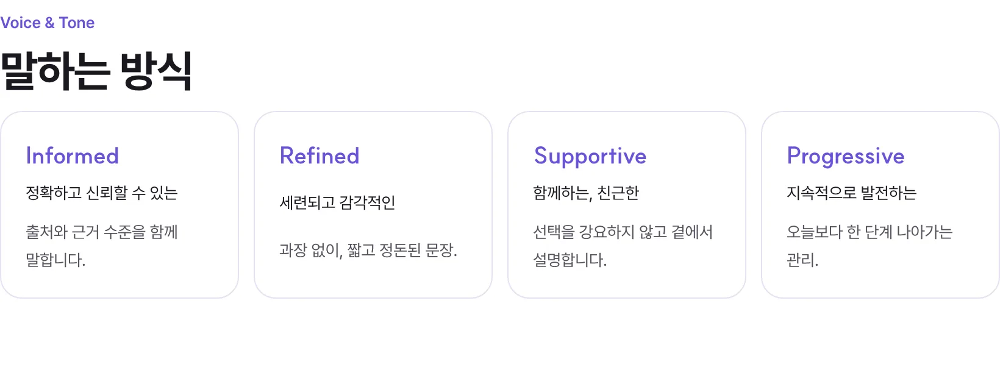
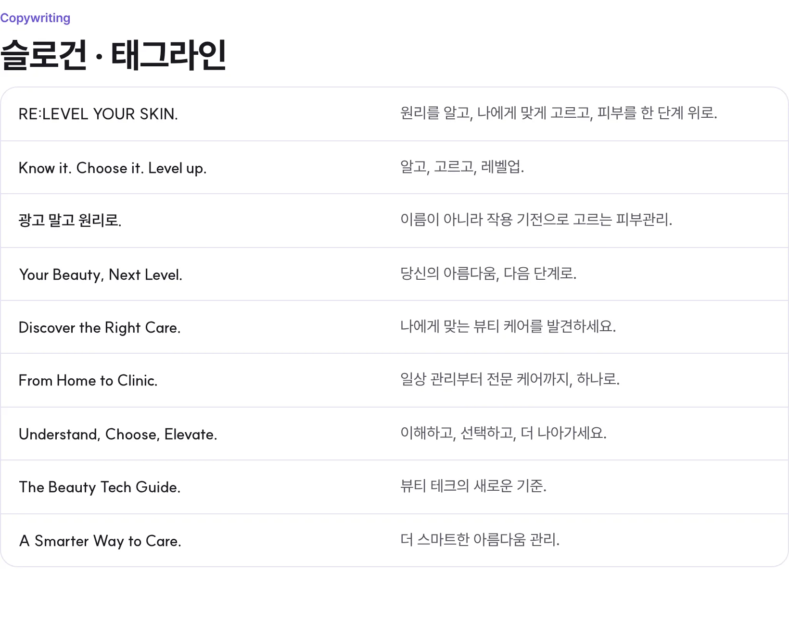
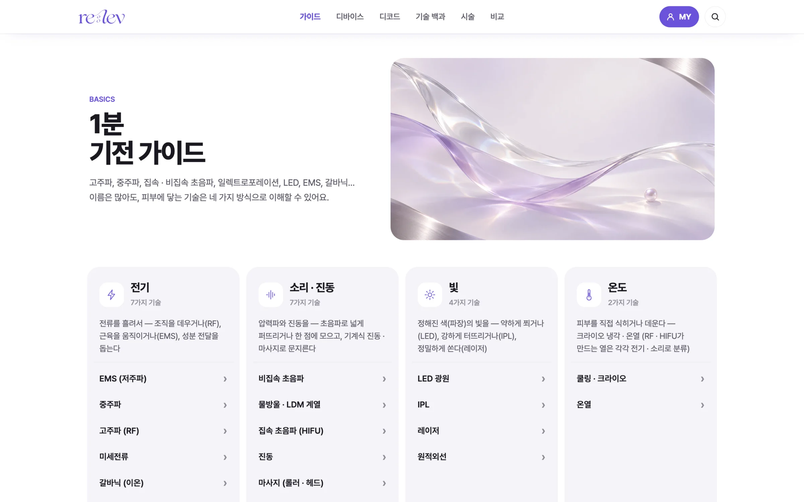
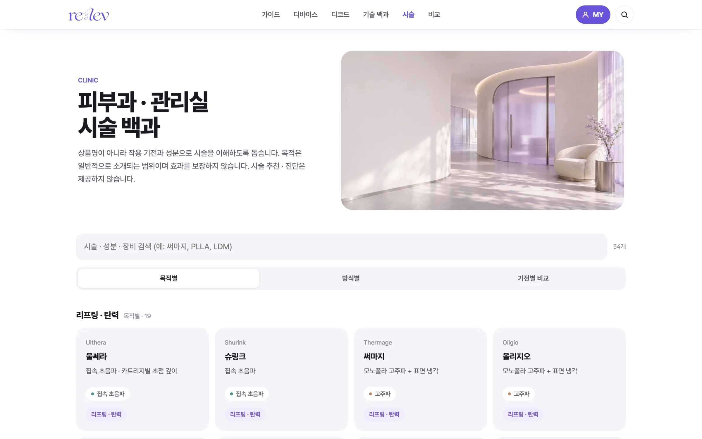

B-01
Why · How · What
누구나 자신의 아름다움을 더 건강하고, 더 나은 단계로 발전시킬 수 있도록. 신뢰할 수 있는 정보와 맞춤 가이드로 홈케어와 전문 케어를 연결하는 것을 브랜드의 이유로 세웠습니다. 키워드는 Beauty Tech · Personalized · Professional · Accessible · Elevated.

CHART 03 — WEB SERVICE
피부관리 기기와 피부과 시술을 상품명이 아니라 작용 기전으로 연결하는 뷰티 테크 웹서비스. 문제 정의부터 네이밍 · 브랜드 시스템 · 정보 구조 · 편집 기준 · 웹 구현까지 혼자 만들었습니다.
같은 초음파 기기도 ‘쎄라’ · ‘에어샷’ · ‘부스터’처럼 이름과 광고 문구로만 팔려, 무엇이 같은 원리이고 무엇이 다른지 비교할 수 없었습니다.
상품명이 아니라 작용 기전을 기준으로 삼으면, 뷰티 디바이스와 피부과 시술을 전기 · 소리 · 빛 · 온도 네 가지 에너지로 같은 표 위에 놓을 수 있다고 봤습니다.
네이밍과 브랜드 시스템을 세우고, 기전 가이드 · 디바이스 · 기술 · 시술 · 비교 · 이름 해독의 6개 축으로 정보 구조를 짰습니다. 출처 등급(T1–T7)과 의료광고 표기 기준까지 직접 설계했습니다.
relev.kr 공개. 400여 개에 달하는 뷰티 디바이스와 약 20가지 기술, 40여 종의 피부과 · 관리실 시술를 같은 기준으로 정리했습니다.

피부관리 기기는 ‘쎄라’ · ‘에어샷’ · ‘부스터’ 같은 이름과 광고 문구로 팔립니다. 같은 초음파 계열이어도 이름이 다르고, 이름이 비슷해도 전혀 다른 기술이기도 합니다. 피부과 시술도 마찬가지라, 홈케어 기기와 시술이 어떤 관계인지 한눈에 비교할 곳이 없었습니다.
그래서 기준을 상품명에서 작용 기전으로 옮겼습니다. 피부에 닿는 기술은 결국 전기 · 소리(진동) · 빛 · 온도 네 가지 에너지로 나뉩니다. 이 한 가지 기준 위에 뷰티 디바이스와 피부과 시술을 함께 올리면, 무엇이 같은 원리이고 무엇이 다른지 정직하게 보여 줄 수 있습니다.
‘쎄라’, ‘에어샷’, ‘부스터’ 같은 이름이 실제로 어떤 기술을 뜻하는지 풀어 줍니다.
고주파 홈 기기와 써마지, 비집속 초음파와 울쎄라처럼 같은 계열을 잇되, 출력 · 깊이 · 허가 범위가 다르다는 점을 함께 적습니다.
규제기관 문서와 광고 문구를 같은 무게로 다루지 않도록, 모든 값에 출처 등급과 검수일을 붙입니다.
B-01
누구나 자신의 아름다움을 더 건강하고, 더 나은 단계로 발전시킬 수 있도록. 신뢰할 수 있는 정보와 맞춤 가이드로 홈케어와 전문 케어를 연결하는 것을 브랜드의 이유로 세웠습니다. 키워드는 Beauty Tech · Personalized · Professional · Accessible · Elevated.

B-02
흐르는 세리프 소문자 워드마크. e에서 l로 이어지는 가는 선 한 줄이 피부에 닿는 에너지(파동)이고, 콜론의 두 타원은 피부 속 세포입니다. 파동이 지나간 뒤 글자는 l에서 한 단계 높이 솟아오릅니다. RE(다시)에서 LEV(더 높은 단계)로.

B-03
콜론의 두 세포가 에너지를 받는 순간을 스월 심볼로, 세포들이 아래에서 위로 떠오르는 흐름을 Cell Rise 그래픽으로 만들었습니다. 이 흐름 하나로 키 비주얼, 배너, 리스트 기호, 로딩까지 확장합니다.


B-04
LILAC INTELLIGENCE — 피부 과학과 세련된 여성성의 균형. 채도를 낮춘 라벤더로 화장품 브랜드 특유의 가벼움과 구분하고, 화면 비율(55 · 20 · 10 · 10 · 5)까지 정했습니다. 헤딩은 SUIT, 본문은 Pretendard, 수치는 JetBrains Mono로 씁니다.


B-05
Informed · Refined · Supportive · Progressive. 출처와 근거 수준을 함께 말하고, 과장 없이 짧게, 선택을 강요하지 않는 말투로 정했습니다. 대표 카피는 “광고 말고 원리로.”


S-01
사용자가 어디서 들어와도 같은 기준(작용 기전)으로 이어지도록 정보 구조를 짰습니다. 기전 가이드에서 네 가지 에너지를 배우고, Device에서 400여 개의 뷰티 디바이스를, Science에서 기술별 원리 · 근거 · 주의사항을, Clinic에서 40여 종의 시술을 같은 표로 봅니다. Compare는 최대 3개를 나란히 놓고 1회당 비용까지 계산하고, Decode는 마케팅 이름이 실제로 뜻하는 기술을 풀어 줍니다.






S-02
검색과 비교가 많은 서비스라, 모바일에서는 필터와 비교 칸을 한 손으로 다룰 수 있게 정리했습니다.


피부 시술과 기기 정보는 쉽게 광고가 됩니다. 그래서 화면보다 먼저 편집 원칙과 표기 기준을 만들었습니다. 모든 값에는 출처 등급(T1 규제기관 문서 → T7 사용자 경험)과 검수 상태를 붙이고, 확인되지 않은 정보는 ‘확인 필요’로 남깁니다.
표기 기준은 의료법 제56조 · 제57조(의료광고), 제27조 제3항(환자 유인 금지), 의료기기법 제24조, 표시 · 광고 공정화법을 참고해 썼습니다. ‘치료 · 완치 · 부작용 없음 · 100%’ 같은 표현을 쓰지 않고, 해외 인증은 ‘FDA 510(k) 클리어런스’처럼 제도 이름을 정확히 적습니다. 피부과 콘텐츠를 만들 때도 그대로 쓰이는 기준입니다.
규제기관 · 학술 논문 · 독립 시험 · 제조사 시험 · 제조사 스펙 · 광고 · 사용자 경험을 서로 다른 무게로 표시합니다.
추정 스펙, 가상의 후기 · 사용자 수, 개인 진단 · 시술 추천, 의료기관 추천 · 예약 수수료.
제휴 · 광고 여부는 분류 · 순위 · 비교 결과에 영향을 주지 않으며, 제휴 링크는 첫 화면에 표시합니다.